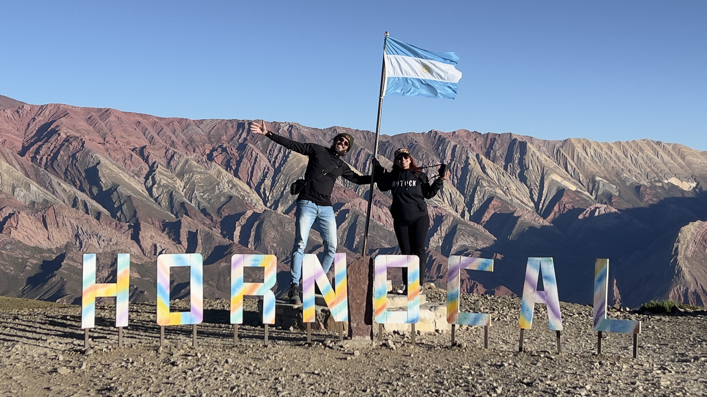
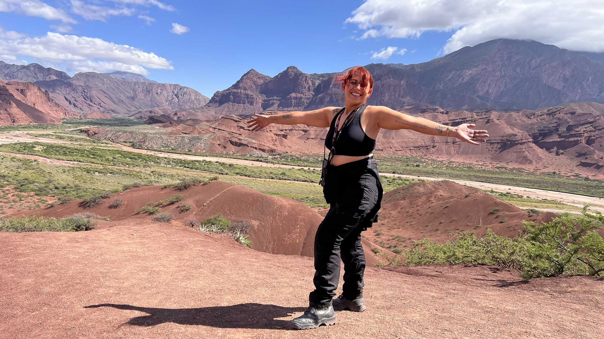
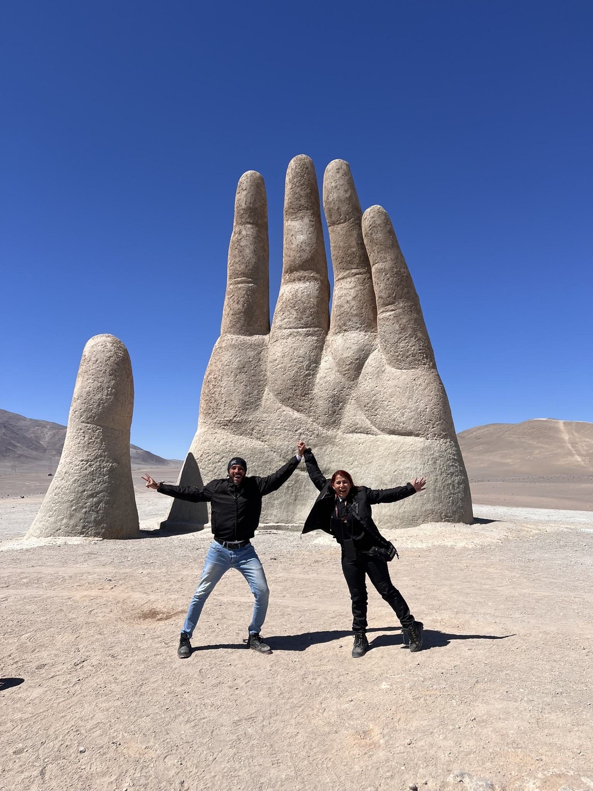

Às 05h15 da manhã, saímos com destino a Londrina. O silêncio de São Paulo foi quebrado pelo ronco de dois motores icônicos: eu, Simone Carolina, a bordo da minha Sportster 883R, e o Leon, do Canal Motock, encarando o desafio audacioso de pilotar sua imponente V-Rod Muscle rumo ao Deserto do Atacama.
Essa viagem nunca foi apenas sobre o destino. Era sobre provar que motos muitas vezes subestimadas para longas distâncias poderiam, sim, atravessar um continente. A V-Rod Muscle, com sua posição de pilotagem exigente e potência bruta, colocava à prova a resistência do Leon. Já a minha 883, frequentemente rotulada como urbana, mostrava desde o início que poderia ser muito mais: uma verdadeira companheira de jornada.
Na saída de São Paulo, pegamos a Rodovia Castelo Branco, que nos recebeu com um verdadeiro batismo: neblina densa e frio cortante. A emoção de finalmente estar na estrada superava qualquer desconforto. Estávamos prestes a realizar um sonho que por muito tempo pareceu distante.
A estrada rapidamente nos ensinou a importância da estratégia. Com o tanque da 883 pedindo atenção a cada 150 km, nossas paradas se tornaram frequentes e precisas. Leon aproveitava cada uma delas para aliviar o desgaste físico causado pela posição de pilotagem da V-Rod. Mas essas pausas nunca foram apenas técnicas; eram momentos de conexão, de respirar fundo, de olhar ao redor e entender que a viagem já estava acontecendo em cada quilômetro. Cruzando o Paraná, o cenário mudou drasticamente. O frio da manhã deu lugar a um calor de 30°C. Chegamos exaustos, mas com a alma leve. Os primeiros 550 km confirmavam que estávamos no caminho certo.
O Teste Físico até Foz do Iguaçu
O segundo dia trouxe uma realidade mais dura. Saímos de Londrina enfrentando um asfalto severamente castigado, principalmente entre Maringá e Cascavel. A pista simples, o fluxo intenso de caminhões e o calor forte transformaram o trecho em um verdadeiro teste físico e mental. Foi ali que a estrada começou a cobrar. As costas do Leon reclamavam, os braços cansavam e cada imperfeição do asfalto era sentida, mas nos mantivemos firmes.
"Durante uma parada, compartilhamos uma das reflexões mais importantes da viagem: se o foco é apenas o destino, o melhor é pegar um avião. Viajar de moto é sobre a jornada. Nenhum outro meio de transporte poderia proporcionar tamanha liberdade."
Ao chegar em Foz do Iguaçu, deixamos as motos na hospedagem e vestimos nossa “skin turista” para desacelerar. Diante das Cataratas, ficamos sem palavras. A força da água, o vento no rosto e o som ensurdecedor criaram uma experiência impossível de descrever. Foi um momento de renovação. Saímos dali com a certeza de que estávamos prontos.
Entre História, Perrengues e a Solidariedade no Chaco
Cruzar a fronteira para a Argentina foi o início de uma nova fase. A travessia pela aduana foi surpreendentemente tranquila. Visitamos o Marco das Três Fronteiras e seguimos para as ruínas Jesuíticas de San Ignácio Miní, em Misiones, onde assistimos a um espetáculo noturno de luzes impressionante. Mas a estrada não demora a testar quem decide segui-la.
No dia seguinte, rumo a Corrientes, o suporte de placa da minha 883 quebrou. Um morador local tentou soldar, mas não durou cinco minutos. No fim, fixamos a placa no sissy bar com abraçadeiras plásticas. Não era o ideal, mas era o suficiente para seguir.

O trecho pelo Chaco Argentino foi brutal. Conhecido pelas retas intermináveis, calor de 50°C e asfalto precário, mudamos a rota após 200 km em direção a Termas de Río Hondo. O maior desafio veio na hospedagem em Aviá Terai: enfrentamos 6 km de terra e, à noite, um temporal transformou tudo em lama pura. Pela manhã, as motos pesadas e com pneus de asfalto não tinham aderência alguma. Sair dali parecia impossível.
Foi então que vivemos a generosidade do povo argentino. O anfitrião da pousada colocou nossas motos em um carretão puxado por um trator e nos rebocou até o asfalto. Naquele momento, qualquer estereótipo caiu por terra. A estrada mostrou que a solidariedade não tem nacionalidade.
Rumo às Alturas e as Esculturas da Natureza
Passamos por Santiago del Estero, visitamos o incrível museu automotivo de Termas de Río Hondo e pegamos a Ruta 307 rumo a Tafí del Valle. O cenário mudou para um ar frio e curvas sinuosas margeando o Rio Los Sosa. Ao subirmos a 2.700 metros de altitude, as nuvens pareciam “derramar” sobre as montanhas. O nome Tafí, que significa “estrada esplêndida”, fazia todo sentido. Na mítica Ruta 40, visitamos as ruínas de Quilmes, um mergulho na resistência indígena.
A caminho de Cafayate pela Ruta 68, entramos na Quebrada de las Conchas. Um espetáculo geológico de tons vermelhos e terracota. Paramos no Anfiteatro — uma formação circular com acústica perfeita onde músicos locais tocam —, na imponente Garganta do Diabo e no Mirador das Três Cruzes, com uma vista panorâmica surreal.

Avançando para a Quebrada de Humahuaca, a quase 3.000 metros, a sensação foi de voltar no tempo entre casas de adobe e sons de flautas andinas. Para visitar o Cerro de 14 Colores, a impressionantes 4.350 metros de altitude, tomamos uma decisão consciente: subir de van. As Harleys já tinham enfrentado muito, e o rípio ali seria um risco desnecessário. Ver o sol baixar sobre aquelas montanhas coloridas foi um dos momentos mais silenciosos e impactantes da viagem.
O Momento Mais Tenso: Paso de Jama e a Descida Sem Freio
Saindo de Humahuaca, cruzamos a Cuesta del Lipán a 4.170 metros e as Salinas Grandes, um deserto branco infinito. Foi na aduana chilena de Paso de Jama que vivemos o maior susto: o freio traseiro da minha 883 travou completamente. A roda não girava e o sonho parecia ameaçado.
A estrada agiu. Dois motociclistas colombianos pararam e trabalharam por horas até conseguir desativar a pinça traseira. Saímos dali no final da tarde, **totalmente sem freio traseiro**, rumo ao deserto. Para garantir nossa segurança, Jaime Marin (em sua Street Glide) e Felipe Duke (numa Virago 250) decidiram nos escoltar pela escuridão total do deserto, sob frio extremo e altitude perto de 5.000 metros. Confiando apenas no freio dianteiro e no motor, chegamos a San Pedro de Atacama às 21h. Exausta, eu chorei de pura emoção e vitória.
Recuperação, Conexão e a Consagração na Mão do Deserto
Após arrumar o freio em Calama, vivemos o Atacama: os Geysers del Tatio a -6°C, o Vado Putana e um passeio astronômico inesquecível. Seguimos para a costa em Antofagasta, vendo o Oceano Pacífico de um lado e a cordilheira do outro. E então, finalmente, alcançamos a **Mão do Deserto**. Tocar aquela escultura foi sentir, em um único instante, a grandeza de tudo o que havíamos superado.

O retorno marcou o reencontro com a Argentina pelos Caracoles e pela Ruta 7 rumo a Mendoza. A 106 km de Uruguaiana, asfalto destruído da Ruta 127 cobrou o preço final: a roda da V-Rod quebrou e o Leon cruzou a fronteira de reboque. Mas já estávamos em casa, bem no dia do aniversário dele.
O Final: 9.021 km Depois
Chegamos em São Paulo sob um temporal, encharcados e sorrindo. Foram 30 dias, 9.021 km rodados, e a certeza de que a 883 e a V-Rod foram valentes demais (o galão reserva voltou cheio!).
"Qualquer moto pode te levar longe. O que realmente importa é quem está no comando. Desligar o motor na porta de casa foi o som mais gratificante de toda a viagem. Viajar é incrível. Mas voltar, sabendo que você superou tudo, é ainda melhor."